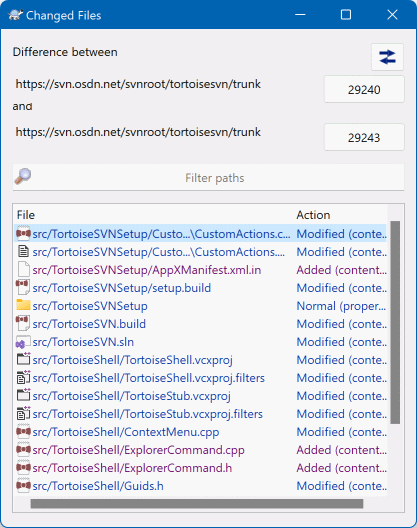
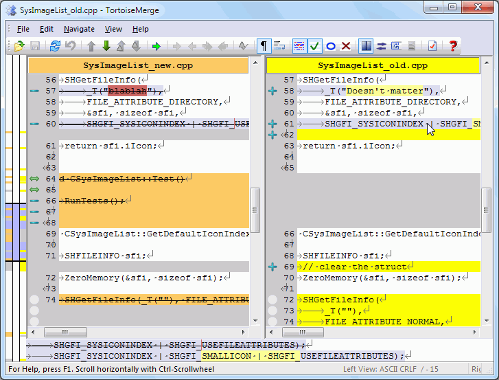
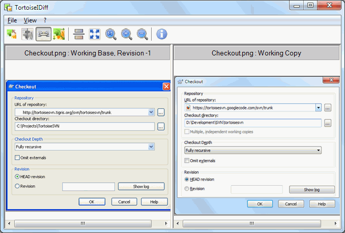

6比对差异：到底改了哪几行
「这个文件我改了什么？」和「同事这次提交改了什么？」—— 这两个问题几乎每天都要回答一次。靠肉眼翻代码是体力活，SVN 有专门的比对工具替你把差异标出来。
- 提交前：你改了三个文件、上百行，其中可能混进了调试用的输出。双击看一眼差异，比通读一遍文件快十倍——改动的行会被染上颜色，扫一眼就知道。
- 接别人的活时：同事说他「顺手优化了一下」。看他那次提交的差异，一分钟就能判断是「真顺手」还是「大重构」，从而决定要不要现在就更新。
- 排查问题时：功能昨天还好好的，今天坏了。找出昨天到现在改了哪几行，范围立刻从「整个项目」缩小到「几条语句」。
场景一：看自己的改动（提交前自查）
最常见的用法。在你的改动提交之前，把改过的文件和库里的原始版本对一遍。
SVN Check for modifications（第 5 节）。列表里所有本地改动都会列出来。SVN Commit... 的对话框里，文件列表表头就写着 (double-click on file for diff)——同样是双击，效果一样。发现不对的行可以就地取消勾选，不必关掉提交窗口。所有比对窗口都遵循同一个约定：左边是旧版本，右边是新版本。看自己的改动时——左边是「库里原来的样子」，右边是「你改完的样子」。看历史提交时——左边是「这次提交之前」，右边是「这次提交之后」。
认清这个方向，就不会把「删掉」看成「新增」了。
场景二：看别人 / 历史的改动
想知道某一次提交到底动了什么，入口在日志窗口（Show log）里。这是排查「谁把这里改坏了」的标准路径。

中间那个上下箭头的蓝色按钮可以对调起点和终点——对调之后，「Added（新增）」会变成「Deleted（删除）」。当你看不清某个文件到底是加进来的还是删掉的，点它对调一下就有答案。
· Filter paths：文件多的时候在这里输入关键字，快速筛出你要找的那个路径。
· 结果列表，两列：
File：文件路径，前面的彩色小图标和角标是同一套语义。
Action：这次比对的起止版本之间，这个文件发生了什么——Modified (content) 内容被改、Added (content) 新增、Normal (property) 内容没变但属性变了。
这个列表本身还不是「逐行差异」，它回答的是「哪些文件变了」。想看清具体改了哪几行，还要在列表里双击某个文件，才会打开左右并排的比对窗口。
文本比对：红删绿增黄改
双击之后打开的，就是 TortoiseMerge。它是文本文件专用的比对工具，也是你以后用得最多的一个窗口。

· 左右两栏的标题：这里是 文件名_new.cpp（左）和 文件名_old.cpp（右）。看自己的改动时，一般左边是库里的原始版本、右边是你改过的版本，标题上的具体字样随比对来源不同而变化，认准「哪边是新的」就行。
· 行号：两栏各自显示行号。行号对不上的地方，就是有增删的地方。
· 中间那条连接带：把左边和右边的对应行连起来，能一眼看出「加了一行」还是「删了几行」。
· 颜色含义（重点）：
红 这一行是删除的——旧版本里有，新版本里没了；通常只出现在左边。
绿 这一行是新增的——旧版本里没有，新版本里加上了；通常只出现在右边。
黄 这一行是改动的——左右两边都有对应行，但内容不一样；左右两栏都会标黄，方便你逐字对比。
扫一遍颜色分布就够了：全是黄色说明只是改了几行；大片红色集中在一侧，说明有大段内容被删掉了——这种情况值得停下来问一句为什么。
· 工具栏：上一处/下一处差异的跳转箭头、合并与保存相关按钮、上下文的折叠展开。文件很长时，用跳转箭头依次跳到每一处差异，比滚动条拖动高效得多。
· 底部状态栏：显示当前光标位置、编码（如 ASCII）、以及当前处于哪一栏等信息。
图片比对：用 TortoiseIDiff 看图形文件的差异
图片、设计稿这类二进制文件，没法一行行比。TortoiseSVN 的办法是：把两个版本并排摆出来给你用眼睛看，这就是 TortoiseIDiff。

· 左右两块画布：左边显示旧版本的图，右边显示新版本的图。画布上方有标题条，写明这一侧显示的是哪个版本，比如 Working Base, Revision -1（库里的基准版本）和 Working Copy（你本地现在这一份）。
· 为什么用并排而不是叠起来：图片没有「行」的概念，并排显示让你直接用眼睛找不同；配合同步缩放和同步平移，两张图会一起动，只要盯着同一个位置看就行。
· 工具栏上那几个按钮：调整显示比例的放大/缩小、让两张图对齐显示的选项，以及切换显示方式的按钮。不用记具体图标形状——把鼠标停上去，工具提示会告诉你它叫什么。
· 什么时候会用到它：改了 UI 切图、图标、示意图、设计稿之后，提交前用它扫一眼，确认改的是你打算改的那张，而不是手滑覆盖了别的图。二进制文件的改动没法回滚单行，看这一眼很值。
· 一个反过来的用处：如果两张图并排看完全一样，但 SVN 说这个文件已修改——那多半是图片被别的软件重新保存过一遍，像素没变但文件字节变了。这种情况不要提交，用 Revert 把这种「假改动」撤掉（第 9 节）。
文本比对 vs 图片比对：什么时候用哪个
适用：代码、配置文件、说明文档、脚本、XML/JSON 这类纯文本。
工具：TortoiseMerge（双栏并排），差异按行染色。
能回答：加了几行、删了几行、哪一行被改成什么样了。
能做的动作：按行回滚——把其中某几行恢复成旧版本，其余改动保留（见下方技巧）。
→ 判据是「能不能按行读」
适用：png/jpg/ico 等图片、设计稿、切图、示意图。
工具：TortoiseIDiff（左右两块画布并排）。
能回答：改的是不是我打算改的那张、视觉上有什么变化。
做不到：逐行回滚——二进制文件没有「行」，只能整个文件撤销重来。
→ 判据是「打开就看见画面」
这是比对工具最值钱的用法，很多人用了几年 SVN 都不知道。
场景：你改了一个文件，其中大部分改动是好的、想保留，但有几行是调试用的、或者改错了想退回去。正常情况下你得手工把这几行改回来——费时又容易改错。
更省事的做法：在比对窗口里，对着那几行做「回滚/恢复」操作（TortoiseMerge 里通过右键菜单或工具栏的对应按钮，把选中行恢复为旧版本的内容），然后保存。这样只有你指定的那几行被恢复成旧版本，其余改动原样保留。
用之前注意两点：一、这是直接改你本地的文件，操作前先想清楚要保留哪些行；二、图片这类二进制文件没有这个能力，只能整个文件用 Revert 撤销。
对照表：什么场景用什么方式看差异
| 我想知道… | 从哪里进 | 用什么工具 | 看到的结果 |
|---|---|---|---|
| 我刚改的文件，改了什么 | 检查修改对话框 → 双击文件 | TortoiseMerge | 旧版 vs 我现在的版本，逐行染色 |
| 某个文件改了什么（不打开列表） | 文件右键 → TortoiseSVN → Diff | TortoiseMerge | 同上，直接跳进比对窗口 |
| 比现在的版本和上一次提交的区别 | 文件右键 → TortoiseSVN → Compare with previous revision | TortoiseMerge | 上一版本 vs 本地版本 |
| 同事那次提交改了什么文件 | Show log → 选中版本 → 看下方文件清单 | 日志窗口 | 本次提交涉及的文件列表 |
| 同事那次提交的某个文件改了什么 | Show log → 选中版本 → 双击文件 | TortoiseMerge | 提交前 vs 提交后，逐行染色 |
| 两个版本之间一共改了哪些文件 | Show log → Ctrl 选中两个版本 → Compare revisions | 比对结果列表 | 文件清单 + 每个文件的动作类型 |
| 这张图改了没有、改成什么样 | 检查修改对话框 → 双击图片文件 | TortoiseIDiff | 新旧两张图并排 |
| 某一行代码是谁改的 | 文件右键 → TortoiseSVN → Blame... | Blame 视图 | 每行前面标出版本号与作者 |
| 整个分支和主干的差别 | 文件夹右键 → TortoiseSVN → Revision graph / Merge 向导的 Test Merge | 拓扑图 / 合并向导 | 分支走向，或合并会带来的改动预览 |
- 差异是「和哪个版本比」决定的。同一个文件，和「上一次提交」比、和「三个月前的版本」比，结果完全不同。看到结论不对，先确认你比的是哪两个版本。
- 比对窗口是只读的，除非你主动保存。但它一旦保存，改的就是你本地那个真实文件。所以：打开看没问题，动手改之前想清楚。
- 二进制文件不能逐行回滚。图片、Office 文档、压缩包这类文件，比对只能「并排看」，想撤回只能整个文件用 Revert（第 9 节）。
提交前双击一眼，更新后双击一眼——这两个动作花不了半分钟，但能挡掉绝大多数「提交错了文件」和「不知道别人改了什么」的麻烦。